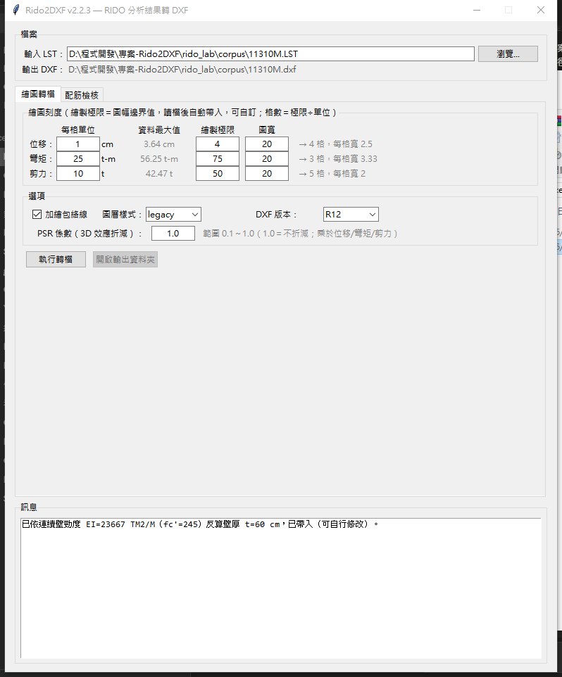
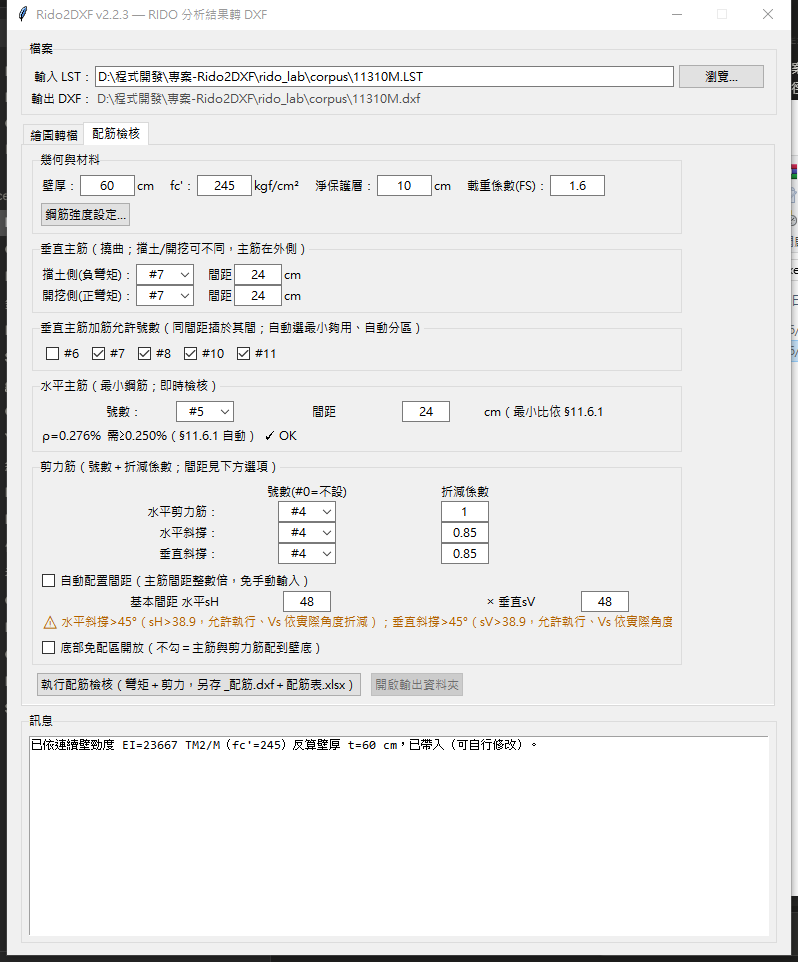
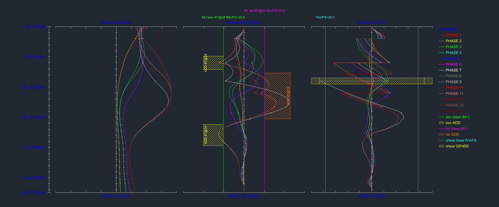
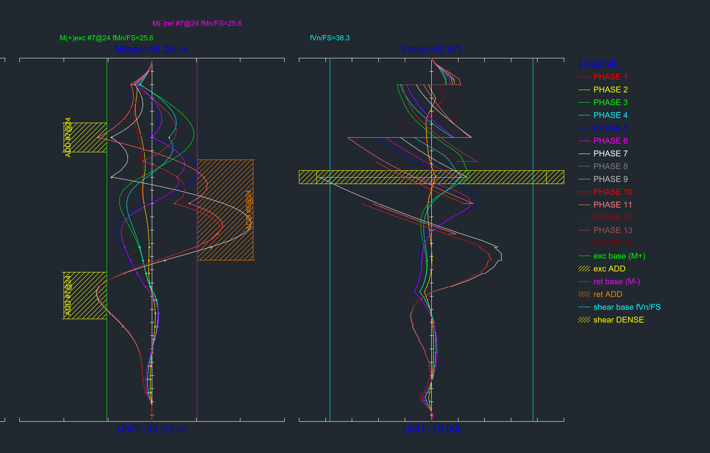
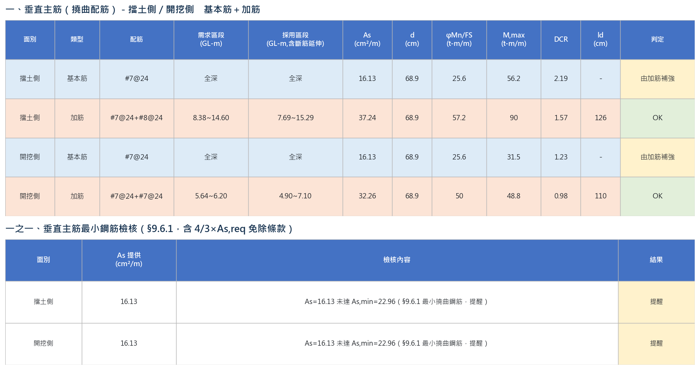
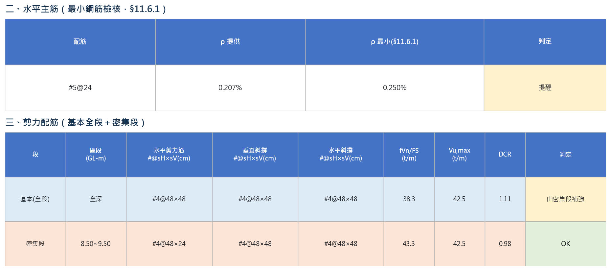

1.簡介與版本重點
Rido2DXF 將 RIDO 擋土連續壁分析程式輸出的列表檔（*.LST）轉換為
DXF 圖檔，繪出各施工階段之位移／彎矩／剪力對深度分布圖；
並可依連續壁幾何與配筋條件執行撓曲＋剪力配筋檢核，
輸出配筋 DXF 圖與配筋表 Excel。
v2.2.3 版本重點
| 項目 | 內容 |
|---|---|
| 剪力筋號數限制 | 水平剪力筋／水平斜撐／垂直斜撐三型號數選單限縮為
#4／#5／#6（#0＝不設此型），
對齊公司施工慣例；水平主筋維持 #4～#11 全清單。 |
| 壁厚由 EI 反算並取整 | 依 LST 內連續壁勁度 EI 反算壁厚 t，結果四捨五入為整數
公分後帶入「配筋檢核」分頁（仍可手動修改）。 |
| 水平主筋最小比自動化 | 移除「最小比 % 」手動覆寫欄，一律依 §11.6.1 牆最小水平鋼筋比規定自動計算與檢核。 |
| 包絡線預設開啟 | 「繪圖轉檔」分頁的「加繪包絡線」選項預設勾選（各階段最大／最小包絡線）。 |
| 最小鋼筋檢核表格化 | §9.6.1 最小撓曲鋼筋與 §9.6.1.3「多配 1/3」免除條款， 由文字敘述改為表格化呈現（As 提供／As,min／4/3×As,req／採用門檻／結果／說明）， 並將判定措辭統一為「可滿足」／「無法滿足」，避免與強度不足的「OK／NG」混淆。 |
本版本為 Python 重構版；所有解析與繪圖規則均以真實工程案例逆向驗證 （25 階段 × 3 曲線 × 136 點、軸線 330 條與舊版基準 DXF 完全吻合）。 專案內保留的 C++ 原始碼為更早期版本，僅供歷史參考，行為與現行輸出不一致。
rido2dxf/parser/rido4.py）目前為預留擴充點，
尚待取得範例檔驗證；現行版本以 RIDO 2/3 格式為主。
2.安裝與啟動
本工具以 exe 版發佈，免安裝 Python 或任何套件， 雙擊即可開啟圖形介面：
| 項目 | 路徑 |
|---|---|
| Rido2DXF.exe | dist\Rido2DXF_v2.2.3_exe\Rido2DXF.exe |
使用方式
直接雙擊 Rido2DXF.exe 即可開啟圖形介面， 不需另外安裝 Python 或任何套件。
.LST 檔拖曳到 執行轉檔.bat
上，或雙擊該檔後於提示中輸入檔案路徑，可不開圖形介面直接轉檔。
3.繪圖轉檔
此分頁將 LST 檔的位移／彎矩／剪力曲線輸出為 DXF 圖檔， 每張圖三個可調參數：每格單位、繪製極限（圖幅邊界值）、 圖寬；深度範圍固定為 0 至資料最深點，不可調整。

操作流程
- 於上方「檔案」區塊按「瀏覽…」選擇
.LST檔（或直接貼上路徑）。 選檔後程式立即解析，「資料最大值」欄會顯示位移／彎矩／剪力的實際最大值， 並自動帶入建議的「繪製極限」。 - 視需要調整每格單位、繪製極限、圖寬；灰字區會即時顯示 「→ N 格，每格寬 X」，若最大值超過極限會顯示警告文字（仍可執行，但圖形會被裁切）。
- 於「選項」區塊設定圖層樣式、DXF 版本與 PSR 係數。
- 按「執行轉檔」。輸出檔為與輸入檔同資料夾、同檔名的
.dxf； 若輸出檔已存在會先詢問是否覆蓋。 - 完成後按「開啟輸出資料夾」快速查看結果。
欄位說明
| 欄位 | 單位 | 說明 |
|---|---|---|
| 每格單位 | 位移 cm／彎矩 t-m／剪力 t | 未指定時自動依 1-2-5 數列選取，使格數落在合理範圍內。 |
| 資料最大值 | 同上 | 唯讀，選檔後自動計算並套用目前的 PSR 折減。 |
| 繪製極限 | 同上 | 圖幅邊界值。選檔或改單位後自動帶入「資料最大值以單位無條件進位」； 可自訂。訂得比資料最大值小會警告，但仍會輸出（圖形被裁切）。 |
| 圖寬 | （無因次繪圖單位） | 預設 20，三張圖同值即等寬；格數＝極限 ÷ 單位（進位）， 每格圖面寬度自動＝圖寬 ÷ 2 ÷ 格數。 |
| 加繪包絡線 | ─ | 勾選後另繪各階段最大／最小包絡線（ENVELOPE_MAX／
ENVELOPE_MIN 圖層）。v2.2.3 起預設開啟。 |
| 圖層樣式 | ─ | legacy＝沿用舊版數字編號圖層（000／001…）；
named＝改用具名圖層（AXIS／PHASE_01…）。 |
| DXF 版本 | ─ | R12（預設，與逆向驗證基準相同）／R2000／
R2010／R2018。 |
| PSR 係數 | 0.1～1.0 | 3D 效應折減係數，直接乘於位移／彎矩／剪力上，繪圖與配筋檢核共用； 資料最大值與繪製極限會隨之連動更新。1.0＝不折減。 此欄位每次開啟程式固定重設為 1.0，不會被記憶， 避免忘記上次已折減過。 |
4.配筋檢核
此分頁依連續壁幾何、材料與配筋條件，對載入的 LST 內力包絡線 執行撓曲（垂直主筋）與剪力配筋檢核，並檢核水平主筋是否滿足最小鋼筋比。

4.1 幾何與材料
| 欄位 | 預設值 | 說明 |
|---|---|---|
| 壁厚 t | 依 EI 反算，取整數 cm | 選檔後由 LST 記載之連續壁勁度 EI 自動反算並四捨五入為整數公分
（關係式：EI = 12000·√fc'·t³·0.7·10 / 12）；可自行修改覆寫。 |
| fc' | 245 kgf/cm² | 混凝土抗壓強度，影響壁厚反算與斷面容量計算。 |
| 淨保護層 | 10 cm | 用於計算有效深度 d 與剪力筋間距上限。 |
| 載重係數 FS | 1.33 | 除在能力側，檢核條件為 φMn/FS ≥ MRIDO、φVn/FS ≥ VRIDO。 |
「鋼筋強度設定…」按鈕可開啟各號數鋼筋 fy 值設定視窗
（預設 #4／#5 為 2800 kgf/cm²，#6 以上為 4200 kgf/cm²）。
4.2 垂直主筋（撓曲）
擋土側（負彎矩）與開挖側（正彎矩）分別設定基本筋號數與間距， 主筋配置在斷面外側。可選號數限 #6 起，不含 #9（公司慣例不用 #9）。
「加筋允許號數」勾選可用於補強的號數（同間距插於基本筋之間）； 程式對彎矩超出基本筋容量的區段，自動從勾選號數中選擇最小夠用者， 並自動分區、計算延伸長度與伸展長度 ld。
4.3 水平主筋（最小鋼筋，即時檢核）
使用者指定號數與間距，程式僅檢核鋼筋比 ρ 是否滿足
§11.6.1 牆最小水平鋼筋比規定（#5 以下且 fy ≥ 4200 → 0.20%，
其餘 → 0.25%），欄位變動時即時顯示 ρ 值、規定門檻與 OK／提醒狀態
（如圖 4-1 中「ρ=0.276% 需≥0.250%(§11.6.1 自動) ✓ OK」）。
v2.2.3 起移除手動覆寫最小比的欄位，一律採規範自動值。
4.4 剪力筋
可設定三種剪力筋：水平剪力筋、水平斜撐、垂直斜撐，各自可選
#4／#5／#6（#0＝不設此型）與折減係數
（水平剪力筋預設 1.0，兩種斜撐預設 0.85）。
間距設定二擇一：
- 手動輸入（預設）：分別輸入基本間距水平 sH × 垂直 sV， 程式即時檢核 sH／sV 是否為對應主筋間距的整數倍， 並在斜撐傾角超過 45°（間距 > d − 保護層 − db/2）時顯示軟性警告 （不擋執行，Vs 依實際角度折減計算）。
- 自動配置：勾選「自動配置間距」後，程式依主筋間距整數倍 自動計算並向下加密，手動輸入框停用。
剪力不足時程式自動加密（優先序：先降各型垂直間距 sV， 再降水平間距 sH；水平剪力筋 → 垂直斜撐 → 水平斜撐）。
4.5 底部免配區
「底部免配區開放」核取方塊，預設不勾選（主筋與剪力筋配到壁底）。 勾選後才會計算免配深度：免配主筋條件為 |M| < Mcr/(4/3)， 裸區另需滿足 V < 0.5·φVc0/FS（含尺寸效應）， 最終裸區深度取兩者較小值（較保守）。
4.6 執行與輸出
按「執行配筋檢核」後，輸出兩個檔案（不覆蓋原繪圖轉檔輸出的 .dxf）：
<檔名>_配筋.dxf含容量線與加筋色帶的配筋圖<檔名>_配筋表.xlsx三分頁配筋報告（詳見第 6 章）
下方訊息區會列出撓曲與剪力配筋表、水平主筋檢核結果、開裂彎矩、 裸區深度，以及警告（強度不足，需處理）與提醒（最小鋼筋未達規範下限， 非錯誤，供技師判定）。完成後可按「開啟輸出資料夾」查看檔案。
5.DXF 輸出說明
本節以實際案例（11310M_配筋.dxf，含內力圖＋配筋疊圖）截圖說明
DXF 圖面的分區、圖層與 HATCH 色帶意義；截圖為 ezdxf 渲染之預覽圖
（黑底畫布，實際 DXF 檔案內容不含底色，於 AutoCAD 等軟體開啟時底色依各自設定而定）。
5.1 整體版面：三張圖＋深度軸

| 圖層（legacy 樣式） | named 樣式 | 內容 |
|---|---|---|
000 | AXIS | 深度基準軸、刻度（色 7） |
0 | ANNOTATION | 文字標註（色 5） |
001～0nn | PHASE_01… |
各施工階段曲線（色＝階段編號） |
ENVELOPE_MAX / ENVELOPE_MIN | 同左 | 加繪包絡線開啟時的最大／最小包絡線 |
三張圖的單位與方向：位移圖單位 cm，正值向右；
彎矩圖單位 t-m/m，正值向左（鏡射繪製，圖 5-1 中綠線
M(+)exc 為開挖側正彎矩、洋紅線 M(-)ret 為擋土側負彎矩，
兩者分居軸線兩側）；剪力圖單位 t/m，正值向右、不鏡射，
容量線於軸線左右對稱各畫一條（剪力無方向性）。深度軸以 GL 高程標註，
每 5 m 一個文字、每 1 m 一格刻度。
5.2 配筋疊圖局部放大：容量線與 HATCH 色帶

圖 5-2 中可辨識的元素：
- 基本筋容量線：綠線＝開挖側
exc base (M+)、 洋紅線＝擋土側ret base (M-)，全深直線，代表基本筋單獨提供的φMn/FS，線旁標註號數、間距與容量值。 - 加筋 HATCH 色帶：黃色斜線帶＝開挖側加筋
exc ADD、 橘色斜線帶＝擋土側加筋ret ADD，僅標示於基本筋容量線到加筋容量線 之間的「加筋增量」區段與深度範圍，方便辨識實際補強起訖位置； 基本筋容量線全深不加影線。 - 剪力容量線：青線＝剪力基本 grid 容量
fVn/FS， 於中軸左右對稱各畫一條（剪力純量、不分擋土／開挖）。 - 剪力密集段 HATCH：黃色斜線帶，標示密集段的整幅深度範圍， 代表該區段剪力筋已加密。
- 圖例（LEGEND）：位於剪力圖右側，列出各施工階段曲線顏色， 以及容量線／HATCH 色帶的圖例對照，供對照圖面判讀。
配筋 DXF（_配筋.dxf）使用 R2010（需 R2004 以上）
而非 R12，即為需支援 HATCH 半透明色帶所致。
6.Excel 輸出說明
配筋檢核輸出的 <檔名>_配筋表.xlsx（以下以實際案例
11310M_配筋表.xlsx 為例）含三個分頁，用途各異：
| 分頁 | 頁籤色 | 用途 |
|---|---|---|
| 配筋報告 | 藍 | 易讀報告：基本資料、垂直主筋（擋土／開挖分表）、 最小鋼筋檢核、水平主筋、剪力配筋（基本＋密集段）、 三種剪力筋說明、免配區／裸區、假設條件、警告與提醒。 本節下方以此分頁實際內容截圖說明。 |
| DiaphragmWall對應 | 灰 | 以公司 DiaphragmWall.xlsm 模板原格式生成、程式自動填入數字，
設有工作表保護（密碼 rido2dxf）以防手滑覆寫，
作為程式原始輸出的唯讀基準。 |
| 連續壁配筋立圖(工程師) | 綠 | 同上內容的可編輯複本，供工程師依判斷直接修改後， 接續公司 DiaphragmWall 繪圖工具使用。修改不會回寫報告分頁， 且重新執行程式會整份覆蓋輸出檔，修改後請另存新檔或改檔名。 |
6.1 垂直主筋（撓曲）與最小鋼筋檢核怎麼讀

上表底色：淡藍＝基本筋列、淡橘＝加筋列。 關鍵欄位：
- M,max：該區段對應之最大彎矩需求（工作載重）。
- φMn/FS：折減後之斷面容量，須 ≥ M,max。
- DCR（Demand-Capacity Ratio）＝ M,max ÷ (φMn/FS)； 基本筋列 DCR 常見 >1（單獨不足屬正常，因設計上仰賴加筋補強）， 加筋列 DCR 應 ≤1。
- 判定欄：OK 強度足夠；由加筋補強 基本筋單獨不足、已由下方加筋區段補足（非錯誤，屬設計常態）； NG（本例未出現）＝允許之最大加筋仍不足，需加大號數／雙排／加厚或提高 fc'。
下方「最小鋼筋檢核」表即 §9.6.1／§9.6.1.3「多配 1/3」免除條款的判讀結果， 判定同樣以淡黃底標示「提醒」。三種可能情形：
- As 提供直接 ≥ As,min（符合，不特別標色）；
- As,min 未達，但該面幾無撓曲需求（4/3×As,req 甚小），依 §9.6.1.3 免除；
- As 提供 ≥ 4/3×As,req 但 < As,min（依「多配 1/3」條款視為符合）。
本例（圖 6-1）擋土側與開挖側 As 提供皆為 16.13 cm²/m，未達 As,min=22.96 cm²/m，且不滿足上述免除情形，故兩面均列為 「提醒」（非強度不足，供技師依規範原文判定連續壁是否適用牆章節）。
6.2 水平主筋最小鋼筋與剪力三型怎麼讀

水平主筋僅檢核鋼筋比 ρ 是否滿足 §11.6.1 最小水平鋼筋比： ρ 提供 < ρ 最小時，判定欄同樣以淡黃底標示「提醒」（本例 ρ=0.207% 未達 0.250%），為規範下限提醒而非強度不足。
剪力配筋表底色：淡藍＝基本(全段)列、 淡橘＝密集段列，欄位意義與撓曲表對應（Vu,max／fVn/FS／DCR）； 判定欄同樣以綠底 OK、黃底「由密集段補強」表示。三種剪力筋型 （水平剪力筋、水平斜撐、垂直斜撐）之號數、間距與角度限制已於 §4.4 說明，Excel 表中則於「三之一、三種剪力筋」小節 逐型列出 Vs 貢獻與折減係數。
7.常見問題
Q1 exe 版雙擊後「打不開」或閃退
請依序嘗試：
- 必要時安裝 Microsoft Visual C++ Redistributable 2015-2022（最新版）後再重新嘗試開啟 exe。
Q2 哪些設定會被記住？哪些不會？
除「輸入 LST 路徑」與「PSR 係數」外，其餘所有欄位
（繪圖刻度、選項、配筋幾何材料、主筋、剪力筋、fy 設定等）
在關閉視窗或執行成功時都會寫入使用者家目錄的
.rido2dxf.json，下次開啟自動套用。PSR 係數固定每次重設為 1.0，
避免使用者忘記上次已套用折減。
Q3 輸出檔已存在怎麼辦？
程式會彈出對話框詢問是否覆蓋；選「否」則取消操作，原檔不受影響。
Q4 繪製極限設得比資料最大值小會怎樣？
介面會在灰字提示區顯示警告文字，但仍允許執行轉檔； 超出極限的曲線部分在圖面上會被裁切，請自行確認是否符合需求。